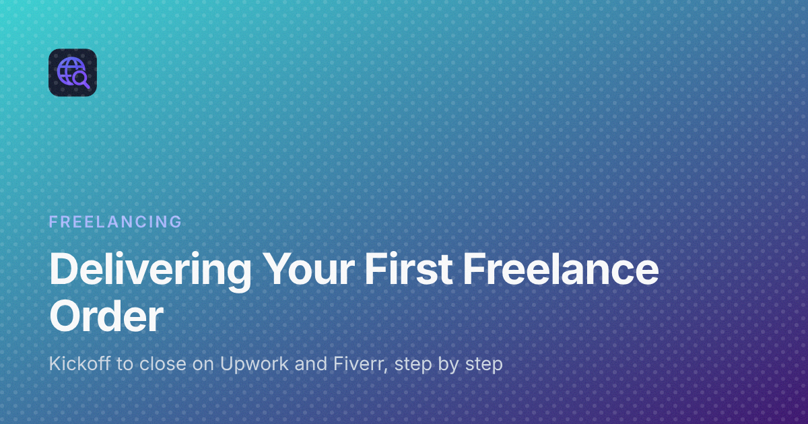

Delivering Your First Order on Upwork or Fiverr: From Kickoff Message to a Closed Job
Most advice for new freelancers stops at the moment the first client says yes. The profile is written, the proposal or gig worked, and a notification says an order has started. Then a quieter question arrives: what exactly do you do now?
The first order matters more than its size suggests. It brings your first review and your first proof that you can finish things. This guide walks through that order from the first message to the closed job, in a way that works on both Upwork and Fiverr.
If you are still deciding where to start, the freelancing guides on Digital Dialogue cover the groundwork, from choosing a platform to building a profile. This post assumes the order has already begun.
Know how your platform runs an order
The two platforms move work through different steps, and it helps to know which buttons and screens you will be using before the client starts asking questions.
On Upwork: contracts and milestones
Upwork work happens inside a contract. A fixed-price contract is split into one or more milestones, and the client funds a milestone before you start it. An hourly contract is tracked through the desktop app and its work diary. When you finish a milestone, you submit the work from the contract page and the client reviews it. If those terms are new to you, read how Upwork works, from proposals to contracts and payments before you begin, so nothing on the contract screen surprises you.
On Fiverr: orders, requirements and delivery
Fiverr work happens inside an order. The buyer purchases a package, answers the requirement questions you set up on your gig, and the delivery clock starts. You deliver from the order page, and the buyer either accepts it or asks for a revision within the limits of the package they bought. The overview of what Fiverr is and how a Fiverr order works is worth a read if you have not been through the order page yet.
On both platforms, keep the conversation inside the platform's messages. That record is what support will look at if anything goes wrong, and moving to outside apps early can break the platform's terms.
Send a kickoff message within your working day
The first message sets the tone for the whole job. It does not need to be long. It needs to show that you read the brief and that you have a plan. A good kickoff message covers:
- A short thank-you and a confirmation that you have started.
- Your summary of the job in your own words, so the client can correct a misunderstanding now rather than after delivery.
- What you need from them: files, logins through the proper sharing method, brand colours, examples they like, or answers to open questions.
- When they will hear from you next, such as "I will share a first draft on Thursday".
Here is a simple shape you can adapt:
"Thanks for the order. I have started. To confirm: you need a one-page landing page with a contact form, built to match the screenshots you sent, mobile-friendly. Before I go further, could you send your logo file and the text for the hero section? I will share a first preview by Thursday evening, my time."
That last line matters. Saying when you will check in removes the need for the client to chase you.
Confirm the scope before you build
Many difficult first orders start with a small gap between what the client imagined and what you understood. Close that gap at the start.
Write the scope down
List what is included in plain sentences and send it in the order chat. On Upwork, it should match the milestone description. On Fiverr, it should match the package the buyer chose. If the client asks for something extra, do not quietly absorb it. Say that it sits outside the current order and offer to quote it separately or as a custom offer.
Agree on what "done" means
For each deliverable, describe how the client can check it. "The form sends an email to your address" is checkable. "The site looks professional" is not. A shared definition of done makes the final approval much easier.
Share progress before the deadline, not on it
Clients get nervous when they hear nothing. A short mid-job update keeps things calm. Useful updates include:
- A screenshot, a short screen recording or a preview link to a work-in-progress version.
- One line on what is finished and one line on what is next.
- Any question that is blocking you, asked clearly so it can be answered quickly.
If you are going to miss the date, say so as early as you know, with a new date you can actually meet. On Fiverr, ask for an extension through the order page rather than only in chat. On Upwork, agree on the change in messages so it is on record. Late news delivered early is far easier for a client to accept than silence followed by a missed deadline.
Package the delivery so it is easy to approve
A delivery is not just a file upload. It is the moment the client decides whether to approve, so make that decision easy.
- Restate what was asked and show how each item was delivered.
- Name files clearly, for example by project and version, instead of generic names.
- Include short instructions: how to open the files, where the code lives, how to update text or images later.
- Attach the actual deliverables through the platform's delivery or submit-work feature, not only as an outside link, so the record stays complete.
- Test everything once more on a phone and a laptop before you press deliver.
Close the delivery note with a clear next step: "Please check the items above. If anything needs adjusting, tell me what and where, and I will take care of it."
Handle revisions calmly
Revision requests are normal, and on your first order they are a chance to show you are easy to work with.
Separate fixes from new requests
A fix brings the work in line with what was agreed. A new request adds something that was never in scope. Handle fixes quickly and without fuss. For new requests, refer back to the written scope and offer a price or a custom offer for the extra work.
Ask for specific feedback
If the feedback is vague, ask focused questions: which page, which section, what should it look like instead. A marked-up screenshot from the client can save hours of guessing.
Stay polite in writing
Everything in the order chat may be read later by the platform's support team. Keep replies short, factual and polite, even when a request feels unfair. If a disagreement grows, use the platform's official resolution tools rather than arguing in messages.
Close the job cleanly
Once the client approves, finish the job properly:
- Thank the client and summarise what was delivered in a final message.
- Mention any handover details, such as where backups are or what they should update later.
- Remove any access you no longer need, and suggest the client change shared passwords.
- Leave honest feedback for the client when the platform asks you to.
- Ask once, politely, for feedback on your work if it fits the conversation. Do not pressure anyone for a particular rating, and never offer anything in exchange for a review.
Then save the delivery note, the scope message and the final files in your own records. They become the starting template for your next order, and the work itself may become a portfolio piece if the client is happy for you to show it.
A short checklist for your first order
- Know where you submit or deliver work on your platform.
- Send a kickoff message with a summary, what you need and your next check-in.
- Write the scope and the definition of done in the order chat.
- Share at least one progress update before the deadline.
- Package the delivery with clear file names and instructions.
- Treat revisions as fixes or new requests, and say which.
- Close with a summary, cleaned-up access and your own saved records.
None of this needs special tools, just a habit of saying what you will do, doing it, and showing that you did.